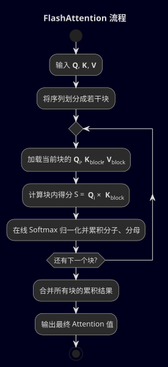
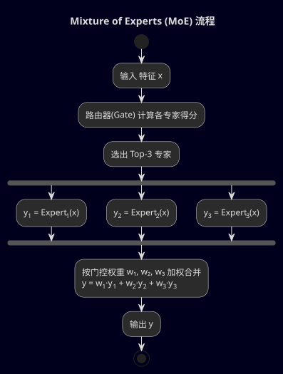
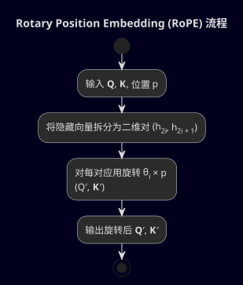
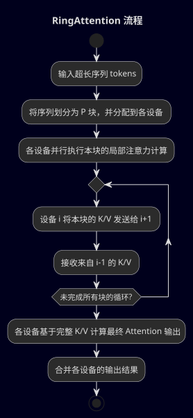
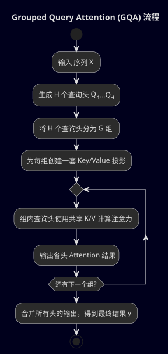

Transformer之后的四项重要技术
引言
自从 2017 年 Transformer 架构横空出世以来，它已成为诸多顶尖人工智能模型的核心。例如，ChatGPT、GPT-4 等大型语言模型都基于 Transformer 展现出了惊人的能力。
然而，随着模型和应用规模的不断扩大，原始 Transformer 架构也暴露出一些限制和挑战：
- 计算和内存开销会随着序列长度二次增长，使长序列处理受限
- 模型参数规模急剧增大，训练和推理成本飙升
- 固定的位置编码难以泛化到超长文本
- 多头注意力的高内存占用导致大型模型推理变慢
为了解决这些问题，近年来研究者提出了多项关键技术改进。本文将全面分析其中四项备受关注的技术：
- FlashAttention（高效注意力计算）
- Mixture of Experts (MoE)（专家混合模型）
- RingAttention + Rotary Position Embedding (RoPE)（环形注意力 + 旋转位置编码）
- Grouped Query Attention (GQA)（分组查询注意力）
我们将分别介绍每项技术诞生的背景、工作机理和应用场景，并探讨它们为未来模型设计带来的启示。
作者
Droggeljug: Github
FlashAttention：高速内存高效的注意力计算
“速度即是洞察，在注意力的每一次交互中，都要快人一步。”
— FlashAttention（高效注意力计算）
诞生背景
Transformer 的自注意力机制赋予了模型强大的建模长程依赖的能力，但代价是计算和内存消耗巨大。
标准的注意力计算对长度为 的序列需要处理 的注意力矩阵，不仅计算复杂度是，更严重的是需要存储这个规模的矩阵以及中间结果。
这种内存占用限制了可处理的序列长度，并降低了硬件效率——GPU往往花费大量时间在内存读写上，而不是实际的算术运算上。
为此，研究人员开始思考：能否不改变注意力机制本身，却大幅提升计算速度、降低内存用量？
FlashAttention 正是在这个背景下诞生的。它由研究者针对GPU架构的特点提出，通过优化算法来充分利用高速缓存和减少不必要的内存访问，实现了在不近似注意力结果的前提下显著加速计算、节省内存。
名字中的“Flash”寓意闪电般快速，也隐含着对 GPU 高速显存（flash memory）高效利用之意。
工作机理
FlashAttention 的核心思路是重新组织注意力计算的顺序，以避免存储完整的注意力矩阵和多余的中间变量。
传统注意力计算会经历如下步骤：先算出所有 Query-Key 点积得到权重矩阵，再整体做 softmax 归一化，然后乘以 Value 得到输出。这个过程中会产生巨大的中间矩阵。
而 FlashAttention 选择按块（block）或按行逐步计算，使计算一边进行一边释放中间结果，从而无需一次性保留整个注意力矩阵。
具体而言，FlashAttention 对序列切分成适当大小的块，在 GPU 上利用共享内存（SRAM）来存放当前块的计算，从而减少对全局显存（HBM）的读写。
它采用一种“在线 Softmax”的方法：例如可以逐行处理注意力权重，每处理完一行（或一个子块）的点积，就立刻对该行做部分 softmax 归一化，然后乘上对应的 Value 累加到输出中。
这样，当下一行开始计算时，上一行的权重不再需要保留。通过这种流水线式的计算，FlashAttention 避免了生成完整的 临时矩阵，而是始终在小块范围内计算并及时归约结果。

这种方法充分利用了 GPU 的高速缓存和并行计算能力，减少了对慢速显存的访问次数，被称为“IO感知”的优化策略。
简而言之，FlashAttention 用空间换时间：用一点额外的算力在块间重叠计算，来换取巨大的内存节省和更高的带宽利用率。
其结果是，在复杂度仍为 的前提下，常数项大幅降低：实际测试中，相比原始实现，FlashAttention 的速度提高了数倍，显存占用降低了一个数量级。
此外，这种加速是精确的——它不会改变 Attention 计算结果，与标准 Transformer 完全一致（不同于一些近似注意力方法）。这一点确保了模型精度不受影响，因此可以放心地用 FlashAttention 替换原有注意力模块。
应用场景
FlashAttention 的出现，对训练和推理都有立竿见影的帮助。
在训练阶段，它允许更长序列或更大批量在同样的硬件上跑通，从而提升模型能力和训练效率。 例如，以往受限于显存，可能只能输入 512 或 1024 长度的序列进行训练；采用FlashAttention后，输入长度扩展到 2K、4K 甚至更长成为可能，这对于长文理解、代码建模等任务意义重大。同时，因为计算更快，模型每秒能处理的 token 数增加，缩短了训练时间。
在推理阶段，特别是大模型部署时，FlashAttention 也大幅降低了延迟和内存使用。 这意味着像聊天问答、实时翻译这类应用可以获得更快的响应，并在相同 GPU 上容纳更长的对话上下文而不溢出内存。
如今，FlashAttention 已经被整合进主流的深度学习框架和 Transformer 库，成为实现高效 Transformer 的“标配”组件之一。许多开源的大模型实现也默认开启了 FlashAttention 来获取性能红利。
可以说，在不改变 Transformer 网络结构的情况下，FlashAttention 用巧妙的算法优化突破了硬件瓶颈，为大模型的可扩展性打下了坚实基础。
专家混合模型（Mixture of Experts, MoE）
“智慧在于调度，当每个输入找到最合适的专家，模型便掌握了深度。”
— Mixture of Experts (MoE)（专家混合模型）
诞生背景
深度学习领域有一个直观的共识：更大的模型往往表现更好。增加神经元和层数能赋予模型更强的表达能力，预训练在海量数据上也会得到更通用强大的表征。
然而，“更大”也意味着指数级增长的计算量和参数量。Transformer 模型从几千万参数发展到上亿、上百亿甚至千亿参数后，训练成本和内存占用变得难以承受。
是否有办法在保持模型 “容量”（参数总数）巨大的同时，又不让每次处理每个样本时都动用所有参数？专家混合模型 (MoE) 就是在这样的思路下重新兴起的。
其实，Mixture of Experts 的概念早在上世纪90年代就有提出：通过多个“专家”子模型协同工作来解决问题。但直到最近，谷歌等研究团队将这一思想应用于超大规模 Transformer，MoE 才显示出对扩展模型规模的巨大潜力。
其背景动因在于：为了训练万亿级参数模型（例如谷歌的 Switch Transformer 达到 1.6 万亿参数），传统的“稠密”模型（每个输入激活所有参数）不可避免地耗费海量算力，而 MoE 提出了一种 “稀疏激活” 的范式——每次只用到部分参数即可得到接近同等效果，从而极大降低计算开销。
工作机理
Mixture of Experts 模型的核心在于将模型的某些层扩展为包含多个子专家网络，每个专家可以理解为一个独立的功能模块（通常是一个前馈神经网络，如 Transformer 中的 FFN 层）。
此外，引入一个门控网络（Gate）或称路由器（Router），由它来根据输入内容动态选择合适的专家为该输入服务。
具体来说，当一个 token（或一批 token）通过 MoE 层时，门控网络会根据这个 token 的特征计算一组得分，表示该 token 应当“咨询”各个专家的程度。然后通常选择得分最高的一个或少数几个专家，让这些专家各自对该token进行变换处理，最后再将专家输出按照得分加权合并。

这意味着，相比常规 Transformer 中每个 token 都通过同一个 FFN 子网络，MoE 结构下不同 token 可能走向不同的专家，每个 token 实际只激活了整个模型中很小一部分参数。由于专家的选择是基于内容的、可学习的，因此模型可以学出一种 “按需分配资源” 的机制：简单的模式可能只需要简单专家处理，而复杂或特殊的模式则调用更擅长相关领域的专家。
通过这种稀疏路由，MoE 层在总参数量巨大（例如有上百个专家的参数之和）情况下，每个样本实际计算的参数却很有限。这带来的直接好处是计算量的大幅降低：比如一个拥有 100 个专家的 MoE 层，如果每个 token 只走 1 个专家，那该层的计算量约为原来的 1/100，但模型总体参数量却增大了许多，保留了极高的潜在容量。
这种“用参数换算力”的策略使得预训练更大的模型成为可能，因为只要有足够的硬件容纳参数，我们就能训练一个稀疏激活的巨型模型，而其每一步计算成本和一个较小的密集模型相当。
不过，实现MoE也伴随着新的难题：怎样保证每个专家都能被有效训练且各司其职？
如果没有约束，门控可能贪婪地把所有输入都送到表现最好的少数专家，导致其它专家闲置，进而模型有效容量没有充分发挥。为此，现代 MoE 模型在训练时通常加入负载均衡的损失项，鼓励路由器平均地利用不同专家，避免某些专家过载或“失业”。
另外还有一些技巧例如设定每个专家最大接收多少个 token，或对路由得分做噪声扰动等，来提升训练稳定性。
谷歌的 Switch Transformer 就是 MoE 思想的成功范例：它采用每个 token 只选 1 个专家的极简路由策略，加上特殊的稳定技巧（如加入一个路由 z-loss 正则项），最终在极大地扩展参数规模的同时，训练依然顺利进行并取得了优于同等计算量密集模型的效果。
可以说，MoE 模型通过引入动态稀疏性，巧妙地突破了“参数规模 vs 计算成本”的矛盾。
应用场景
Mixture of Experts 为构建超大规模模型打开了一扇大门，其应用场景主要集中在需要庞大知识容量又希望节约计算的地方。
大型预训练语言模型是MoE最典型的用武之地：Google 曾在机器翻译中率先使用 MoE 构建超过千亿参数的翻译模型，显著提升多语言翻译质量；随后推出的 Switch Transformer 和 GShard 等模型将 MoE 推向通用的语言模型领域，实现了在相同性能下大幅减少训练时间或者在相同计算预算下提升模型效果。
在实际应用中，一个 MoE 模型可以被视为由多位“专家顾问”组成的团队，每个专家掌握着不同知识或技能。当有新的输入（问题）时，模型能自动挑选最合适的专家来处理，就好比询问最对口的顾问，从而得到更精准的结果。这对于需要处理多样化任务或领域的模型特别有利。
例如，一个多语言的MoE模型可以让不同语言的文本各自找到擅长该语言的专家，从而在单一模型中实现对多语言的高性能支持。又或者在多模态模型中，不同模态信息可以由不同专家来处理，再汇合结果。
在工业界，MoE 模型也被寄予厚望来降低大型模型的部署成本。因为在推理时，每个请求只触发部分专家计算，如果部署架构巧妙安排，让不同请求利用不同专家，那么整体吞吐可以提高，硬件利用率更高。
当然，MoE 模型也有其挑战：例如所有专家的参数总和仍需占据显存或内存，这对部署环境是考验；又如推理时虽然计算少了，但需要高效的路由实现和专家并行。所以一些场景下会权衡 MoE 的利弊。
然而，随着深度学习框架对MoE的支持日渐成熟（如各大分布式训练库提供了 MoE 并行方案），我们看到了越来越多的研究尝试将 MoE 用于如对话模型、代码模型等领域。
总的来说，专家混合模型提供了一种全新的扩展模型能力的范式：通过模块化、按需计算，让模型能够变得前所未有地庞大而智能，为未来的超大模型设计积累了宝贵经验。
环形注意力与旋转位置编码：通往超长序列之路
“以环致远，以旋致密，长序列的秘密藏在循环与旋转之中。”
— RingAttention + Rotary Position Embedding (RoPE)（环形注意力 + 旋转位置编码）
诞生背景
Transformer 的另一大局限在于上下文长度。
原始 Transformer 通常只能处理几百到几千个 token 的序列，因为自注意力的开销会随长度急剧增长。而现实中有许多任务天然涉及超长的内容：如整本小说或论文的阅读理解、长时间序列的解析（视频、音频）、庞大代码库的分析等等。
如何让 Transformer 突破原有的长度限制，一直是研究热点。一方面，硬件内存是瓶颈，我们需要新的注意力机制或计算策略来高效处理长序列；另一方面，即便硬件允许，更长的序列也带来位置编码的新挑战——原有的位置编码方案（无论是固定的正弦/余弦，还是可学习的位置向量）在序列长度远超训练范围时，效果可能不稳定，或者无法捕捉远距离的位置关系。
因此，围绕长序列的 Transformer 改进主要在两个方向展开：其一是改进注意力计算的范式，降低长序列计算和存储成本；其二是改进位置表示方式，使模型能够更好地泛化到训练长度以外，并有效感知相对位置信息。
环形注意力 (Ring Attention) 和 旋转位置编码 (RoPE) 分别对应了这两个方向的创新。它们的共同目标是让 Transformer 在上下文长度上实现飞跃，从几千扩展到几万、几十万，甚至百万级别。
值得一提的是，近年来已经出现了一些支持超长上下文的模型原型：如 OpenAI 的 GPT-4 提供了长达 32K token 的上下文窗口，Anthropic 的 Claude 模型更是号称支持 100K token 的输入。
这些突破背后，正是新型注意力机制和位置编码方法在发挥作用。环形注意力和RoPE便是其中极具代表性和通用性的技术。
工作机理
旋转位置编码（RoPE）
传统 Transformer 采用的位置编码要么是绝对的位置（例如通过预设的正弦–余弦函数进行位置编码，或使用可学习的位置嵌入向量），要么是相对的位置偏置（在计算注意力分数时根据相对距离加一个偏置项）。RoPE 的出发点则与众不同：它通过直接对 、 向量施加一个与位置相关的旋转变换来编码位置信息。
具体来说，RoPE 将每个位置的 Query 和 Key 向量的各个维度看作二维坐标（或复数），按照预设的频率对不同维度对进行旋转。第 对维度的旋转角度通常设定为 （其中 是位置索引， 随着维度递增的频率），这类似于正弦位置编码中不同频率的概念，但 RoPE 不是将值加在向量上，而是将向量在平面上旋转。

经过这样处理后，不同位置的向量方向不同。神奇的是，当我们计算两个 token 间的点积（Attention 里的 ）时，旋转编码的效果体现为点积中自动出现与两者相对位移有关的项。
通俗打个比方，如果没有 RoPE，两位置 和 的 只反映 token 内容相关性；加入RoPE后， 的值将受到 和 差值的影响：位置越远，其对应角度差越大，点积会包含一个衰减或震荡项，某种程度上模拟了相对位置偏置。
因此，RoPE 虽然形式上是绝对编码（每个 token 的表示只跟它自己的位置有关），但通过Attention 机制实现了隐式的相对位置效果。
RoPE 有几个显著优点：
-
它不引入额外参数（完全基于设定的旋转频率公式），实现简单
-
由于是连续的数学变换，它可以自然地拓展到任意长度——只要你能计算更大的位置索引对应的旋转角度，就能给出对应的位置编码，而不像绝对位置embedding那样固定维度或需要插值
-
RoPE 对远距离的位置关系表达更加稳定，模型在训练中可以学会利用这种相对位移信息，因此当部署时遇到比训练时更长的文本，模型也倾向于较好地泛化处理，不会因为从未见过那么大的绝对索引而彻底失灵
很多开源的大型模型都采纳了RoPE方案，例如LLaMA系列模型、ChatGLM、Baichuan等都明确提到使用旋转位置嵌入来提升长文本处理能力。
可以认为，RoPE为长序列Transformer提供了一种高效而优雅的位置表示，在不损失模型性能的情况下铺平了扩展上下文的道路。
环形注意力（Ring Attention）
即使有了像 RoPE 这样的新位置编码，要真正处理十万乃至百万长度的序列，计算上的障碍依旧巨大。
环形注意力是一种针对超长序列的分布式计算架构创新。其核心思想是：将超长序列的注意力计算拆分到多个设备上分而治之，同时通过环状通信保证全局的信息融合。
具体而言，对于一个特别长的序列，我们可以将其按位置切分为若干块（block），例如每块包含一定数量的连续 token，并将这些块分配到不同的 GPU（或TPU）上处理。每个设备负责自己那一块作为查询（Q）的所有计算，但并不是只能看自己的块——通过设备间通信，它也能获取其他块的关键信息。
环形注意力的名字来自这样一种通信模式：将所有设备按环形相连，每个设备将自己这块的 Key、Value 信息依次传递给环中的下一个设备，同时从上一个设备接收新的 Key、Value。这样过了一圈之后，每个设备实际上都陆续看到了来自所有块的 Key/Value，因此它可以对全序列计算完整的注意力，只不过这个过程是分步完成的。
打个比方，想象五个人围成一圈，每个人各自读一本书的一章，然后依次把自己这章的摘要传给下一位，循环几轮之后，每个人都看过了全书所有章节的摘要——最终每个人都对整本书有了全面了解，尽管没有人一次性拿着整本书去读。环形注意力正是类似地，让每个计算节点逐块处理全序列的信息，从而避免了集中处理时内存爆炸。

在环形注意力的实现中，有两个关键点。
一是将块内计算和块间通信重叠进行，以减少等待时间。因为每个设备在处理自己块的注意力计算时，可以同时把该块的 Key/Value 发往下一个设备，让通信和计算并行，不浪费时间。
二是每个设备的内存占用主要由块大小决定，而与全序列长度无关。这意味如果每块选取长度为 ，哪怕总序列长度是 分散到 个设备，每个设备也只需承担 规模注意力的内存，这就把单机内存需求从 降到了 。通过增加设备数（扩展环的规模），理论上总序列长度 N 可以非常大而不致于单机内存耗尽。
实际研究表明，Ring Attention 可以使支持的最大上下文长度相对于基线 Transformer 扩大好几倍。在 2023 年的一项实验中，研究者成功利用环形注意力让Transformer 处理超过 100M（亿级）tokens 长度的序列——这个数字远远超过了现有模型上下文窗口的纪录。
可以预见，环形注意力这种方法将上下文长度扩展到了近乎无限的领域，为那些需要整合海量信息的任务（如整库代码分析、长时段视频理解等）提供了可能。
应用场景
RoPE 的应用已经相当广泛，只要涉及 Transformer 长文本处理，RoPE 往往是默认选择之一。
在大模型训练中使用 RoPE，可以增强模型对长序列的适应性，使其即使训练时序列不太长，推理时也能处理更长输入。
这对于聊天机器人需要记住长对话、多轮交互，或者摘要需要压缩长篇文章等都很有帮助。特别是一些开源模型通过 RoPE 扩展上下文窗口的实践，让用户可以在比如 LLaMA 模型上实现原版没有的长文本处理能力。
RoPE 也常被认为在一定程度上提升了模型的收敛速度和稳定性，因为相对位置信息的明确融入使注意力更高效。
总之，任何想让 Transformer 具有 更长“记忆” 的应用，都能从旋转位置编码中受益。
环形注意力 目前主要还停留在前沿研究和特殊用途的阶段，但它展示出的潜力令人瞩目。
一些需要处理超长序列的任务开始尝试这一思路。例如，在对海量日志数据或 DNA 序列进行建模时，数据长度可能远超传统模型能力范围，环形注意力提供了解决方案，使模型能够一次性考虑非常长的依赖而不是分段处理。
此外，在分布式训练大型 Transformer 时，Ring Attention 的思想也可以与并行计算相结合：比如将模型并行和序列并行融合，最大化利用多机资源。
还有研究将环形注意力用于长篇文档问答或编程辅助，让模型一次看完整个项目代码，从而回答关于整个项目的问题，而不需要片段式地来回检索。这类应用要求模型具备跨越段落乃至章节级别的注意力能力，Ring Attention 恰好为此提供了可能。
当然，目前环形注意力实现较为复杂，只有在高性能集群上才有用武之地，但随着技术成熟，我们有理由相信超长上下文 Transformer 将逐步走出实验室，服务于实际需求。
届时，不论是 RoPE 还是 Ring Attention，都将是其中不可或缺的组成部分：前者解决“记得远方”的表示问题，后者解决“看得更远”的计算问题，两者相辅相成，让 Transformer 真正做到“眼观六路、耳听八方”般地处理超长序列。
分组查询注意力（Grouped Query Attention, GQA）
“分组而治，分心而专，查询的力量在于协同与高效。”
— Grouped Query Attention (GQA)（分组查询注意力）
诞生背景
Transformer 中的多头注意力机制（Multi-Head Attention, MHA）是其成功的关键因素之一。
多头让模型可以从不同“角度”关注信息，但也带来了代价：每个注意力头都有自己的一套 Query/Key/Value 投影参数，推理时还要存储每个头的 Key 和 Value 状态。
在小模型上这不算问题，但对于数十亿参数的大模型（尤其是解码器-only架构的大语言模型），多头注意力在推理阶段的内存占用和带宽开销变得非常显著。
具体而言，在文本生成时，模型需要不断将新 token 的 Query 与先前上下文的 Key 做点积。如果一个模型有 个注意力头，那么需要维护 份“Key/Value 缓存”供后续步骤使用。这些缓存随上下文长度线性增长，占用了宝贵的高速内存，并使每步计算需要频繁访问大量数据。当 很大（例如 32 头、64 头）且层数多时，累积的 Key/Value 存储和访问会极大拖慢生成速度。
为了解决这个瓶颈，Google 的研究人员提出了多查询注意力（Multi-Query Attention, MQA）的想法：与其每个头各存一份 Key/Value，不如让所有注意力头共享同一套 Key 和 Value。
如此一来，无论有多少个头，Key/Value 缓存都只需保存一份，内存占用一下子降低了一个量级，查询速度也提升了（因为减少了内存读取）。多查询注意力据报道能将解码速度提高数倍，在一些早期实验中甚至达到 10 倍以上的提速。
然而，MQA也有明显的不足：强行共享 Key/Value 使得不同头之间缺乏多样性，头数再多也变成“一个模式”在看待输入，可能会造成模型表达能力下降。在实践中，人们发现 MQA 相对于完整的多头注意力，会带来一定程度的性能下降，尤其是精细的生成质量上会有所折损。
于是，业界开始探索折中方案，希望在效率和效果之间取得平衡，“分组查询注意力 (GQA)” 由此诞生。
工作机理
Grouped Query Attention 可以被看作是标准多头和多查询两种机制之间的一个插值与折中。
它的基本思想是：将 个注意力头划分成 个组，每组内部的头共享同一套 Key 和 Value，但不同组之间仍然保持独立的 Key/Value。
换言之，如果把原来每个注意力头看成一个“查询视角”，MQA 是只有1个视角（所有头合一），而 GQA 则是介于两者之间，有 个视角。每个组内的头虽然还是多个，但因为它们看的是相同的 Key/Value，所以几乎等价于一个头（只是 Query 不同而已）。
- 当 时，组数等于头数，就是原始多头注意力；
- 当 时，只有一组，就是多查询注意力；
- 当 时，我们得到一个分组共享的方案。
比如，一个模型本来每层有 16 个注意力头，如果采用 GQA 将其分为4组共享，那么每组有 4 个头，它们共同使用该组的一套 Key/Value。这样每层只需要存 4 份 Key/Value 而不是16份，内存占用降低了75%，而头与头之间并非完全共享——同组的头共享但不同组的头还保留差异性。这样就部分保留了多头的多样性。

从实现上看，GQA 通常要求调整模型的参数矩阵：原来为每个注意力头各自学习的 、 投影矩阵，现在变成每组学习一个。所以投影矩阵的数量从 减少到 ，参数总量也略有下降（不过相比整个模型规模，这点减少可以忽略不计，主要收益还是在推理内存）。
在生成过程中，使用 GQA 模型的每一层只需缓存 组 Key/Value。因为 远小于 （常取值例如 4、8 等，而 可能是 32、64），Key/Value缓存占用和访问带宽显著减少。
与 MQA 相比，GQA 在保留模型性能上做得更好：由于还存在多个独立的 Key/Value 组，模型依然可以通过不同组的头来关注不同类型的信息，只是相比完全独立的多头有所约束。
实际效果表明，选取一个适中的 值（例如使每组包含 2-4 个头）时，模型推理速度和内存表现大幅提升，而任务性能基本与原始多头相当，几乎感觉不到下降。尤其在大模型上，这种优化尤为明显——因为模型越大，多头越多，GQA 节省的资源就越可观。
值得一提的是，研究者还开发出了从现有多头模型转换为 GQA 模型的方法：通过将若干头的权重进行平均或其他方式合并成共享的 Key/Value，以避免完全重新训练模型。这使得在工程上采用 GQA 更加灵活可行。
应用场景
Grouped Query Attention 虽然提出时间不长（大约在2023年中期开始流行），但已经迅速被诸多大型模型所采纳。
最著名的例子莫过于 Meta 的 LLaMA-2 模型：据报道，LLaMA-2 在设计时就采用了 GQA 来降低推理内存，占用了更少的资源，因而在相同硬件上比起不用GQA的模型可以支持更大的上下文或更快的生成。
同样地，新兴的开源模型 Mistral 7B 也使用了 GQA 技术，以小模型实现了惊人的性能，被社区广泛关注。
此外，一些工业界的模型如 IBM 的 Granite 系列亦应用了 GQA 来提升推理效率。
不难看出，在大语言模型的部署场景下，GQA 已成为提升效率的重要工具：无论是聊天机器人需要低延迟响应，还是部署在移动设备上要求节省内存，GQA 都提供了实用的优化手段。
另一个应用场景是在流式生成和长文本生成中。
因为 GQA 减少了 Key/Value 缓存的大小，对于需要处理长对话或长篇续写的模型，可以在给定显存下容纳更长的上下文持续生成，不容易中途内存不足。
同时，由于访问的 Key/Value 条目减少，每步生成计算的延迟也降低，有利于实时应用。
从开发者角度看，采用 GQA 的模型在进行模型并行（尤其是 Tensor 并行）时也较为友好：因为共享的 K、V 意味着在并行场景下需要同步的数据更少，通信开销降低。
总体来说，凡是涉及大型 Transformer 模型推理的地方，Grouped Query Attention 都有潜力被用来加速和优化。
它体现了一种通过架构改进来匹配硬件优势的思路：牺牲极小的模型表达能力换取成倍的效率提升，这样的权衡对工业应用是非常划算的。
随着这一技术被反复验证，我们很可能看到今后的主流大模型，无论是开源还是商业，在多头注意力部分都会默认采用某种形式的 Grouped Query 方案。
结语：对未来模型设计的启示
透过以上对四项技术的分析，我们可以发现 Transformer 生态正在朝着更高效、更可扩展的方向演进。
-
FlashAttention 展示了算法和实现层面的优化如何突破硬件瓶颈，让标准的注意力机制焕发新生
-
Mixture of Experts 则提供了架构层面的新思路，通过稀疏激活大幅提升模型容量，打破了参数规模与计算成本的线性绑定
-
环形注意力和旋转位置编码专注于拓展序列长度这个维度，一个从计算并行性入手、一个从表示方式入手，共同指引 Transformer 迈向超长上下文的疆域
-
Grouped Query Attention 立足于推理效率和内存优化，为实际部署大模型扫清障碍
每一项技术都针对 Transformer 的某个短板提出了创造性的解决方案，它们并非彼此孤立，而是可以协同作用，服务于一个共同的目标：在保持（或提升）模型能力的同时，最大程度降低资源消耗和提高扩展性。
这些创新带给未来模型设计的启示是深远的。
首先，我们看到，想要构建更强大的模型，不再单纯依赖于“堆叠更多层、增加更多参数”这样的 brute force 式扩展。相反，聪明的设计和高效的算法变得同等重要——通过重新思考计算流程（如 FlashAttention）、模型结构（如 MoE、GQA）以及训练部署方式（如 Ring Attention），我们可以在不盲目增加算力需求的情况下获得性能跃升。这对于追求可持续发展的AI来说至关重要，因为硬件摩尔定律放缓，能效和速度的优化需要更多来自算法的贡献。
其次，这些技术预示着未来的深度学习模型将更加模块化和定制化。例如，MoE 体现的是一种模块化思想：模型由许多专家模块组成，可以根据任务动态组装；又如 GQA 从某种程度上限制了注意力模块的自由度，却换来了整体系统更好的运行表现，说明在模型内部不同组件可能采用不同策略优化。
未来的大模型设计或许会集大成：同时采用多种技术，将它们的优势结合。例如，一个未来的超大模型可能会这样构建：底层利用 FlashAttention 和环形并行来高效处理海量上下文，中间若干层是 MoE 结构以提升参数效率，位置编码采用 RoPE 确保长距离稳健，到了生成阶段用 GQA 压缩 Key/Value 以加速输出。这样的模型将比过去任何单一方式扩展的模型都更加强大而高效。
可以预见，组合式创新将成为趋势，各种改进技术将在同一模型中交相辉映。
最后，这四项技术也提醒我们，在追求更高性能时应当全面考虑计算、内存、模型容量、推理速度等各方面因素。
Transformer 的成功不意味着它完美无缺，通过这些改进，我们看到了突破瓶颈的不同路径：有的从硬件友好性出发，有的从数学原理出发，有的从工程实用性出发。这启示研究者和工程师在设计新模型时，需要有整体系统观念，善于发现并弥补现有模型的短板。
今后的 AI 模型或许不再有一个单一的“奇点式”架构突破，而是多个方面同步优化的结果。Transformer 之后，新技术层出不穷，而本文讨论的四项只是其中的代表。展望未来，我们可以期待更多类似的创见涌现，例如进一步的稀疏化技术、更智能的路由策略、甚至全新的序列建模范式。
但无论怎样演变，这些努力的共同指向都是：让模型更聪明地利用每一分计算资源，更从容地应对愈发复杂的任务。
Transformer 作为AI革命的基石，在它之后蓬勃发展的这些技术创新无疑将继续推动下一个阶段的模型进化。通过巧妙地融合同 FlashAttention、MoE、环形注意力 + RoPE、GQA 等理念，我们有望打造出性能卓越又高效实用的AI系统，迈向通用智能的更高台阶。
模型设计的未来，值得我们怀抱信心、拭目以待！